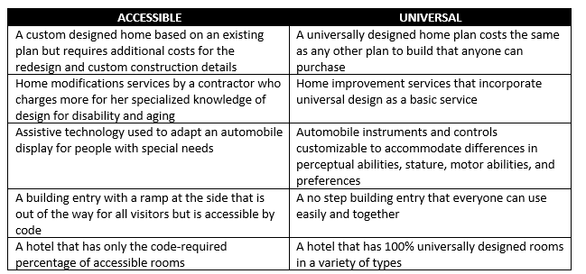

What is Universal Design?
The Basics
Universal Design (UD) focuses on creating environments, buildings, products, and services that are accessible, understandable, and usable by everyone, transcending differences in age, size, ability, or disability. This approach isn't a niche consideration for a minority; rather, it's a core aspect of excellent design. UD aims to ensure that everything in our environment can be used and appreciated by all who wish to do so, recognizing the diversity of human experiences and needs. It's about designing with the entire population in mind, establishing inclusivity and accessibility as fundamental design principles.
Universal Design for the Web
Numerous disabilities necessitate specific adjustments in web content design. Interestingly, these modifications often prove advantageous for almost everyone, not solely for individuals with disabilities. As a result, they're frequently viewed as best practices in design overall. The key to accessible design lies in prioritizing accessibility from the beginning of your design process. While it's feasible to retrofit an existing design to accommodate users with disabilities, it's far more straightforward to factor in accessibility considerations right from the start. Achieving this requires a clear understanding of: